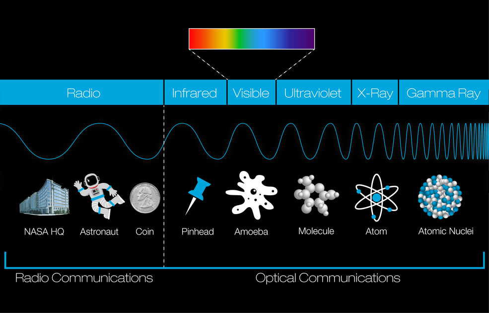

Radiation is energyEnergy is the capacity to do work or produce heat, a fundamental quantity in physics and cosmology. that travels through space or through matterMatter is the physical substance of the universe, anything that has mass and takes up space. It interacts with energy and radiation, forming everything from subatomic particles to celestial bodies. in the form of wavesWaves are propagating disturbances that transfer energy without the net transfer of matter. In the context of electromagnetic radiation, waves describe the oscillating electric and magnetic fields that transport energy and momentum through space. or particles.Particles are fundamental discrete entities of matter or energy that demonstrate both particle-like and wave-like behaviors, serving as the constituents of matter and carriers of radiation.. In physics and cosmology, the term most often refers to electromagnetic radiationElectromagnetic radiation is a form of energy propagation through oscillating electric and magnetic fields, traveling at the speed of light. It encompasses a spectrum from radio waves to gamma rays, differing in wavelength and frequency.., which is carried by particles called photonsPhotons are tiny, fundamental packets of light and other forms of electromagnetic radiation. They carry energy and travel at the speed of light, acting as the carriers of all electromagnetic forces..
Electromagnetic radiation includes many familiar forms of energy such as radio wavesRadio waves are the longest-wavelength, lowest-frequency form of electromagnetic radiation, propagating as oscillating electric and magnetic fields through space.., microwavesMicrowaves are a form of electromagnetic radiation with wavelengths longer than infrared light but shorter than radio waves, capable of heating substances and used in radar and telecommunications.., infrared lightInfrared light is a form of electromagnetic radiation with wavelengths longer than visible light but shorter than microwaves. It is primarily associated with heat and is emitted by all objects with temperature.., visible lightVisible light is the portion of the electromagnetic spectrum that is perceptible to the human eye, encompassing a range of wavelengths that appear as different colors., ultraviolet radiationUltraviolet radiation is a form of electromagnetic radiation with wavelengths shorter than visible light but longer than X-rays. It is energetic enough to cause chemical reactions and is a component of sunlight., X-raysX-rays are a form of high-energy electromagnetic radiation with wavelengths shorter than ultraviolet light but longer than gamma rays, often used in medical imaging and astronomy.., and gamma raysGamma rays are the most energetic form of electromagnetic radiation, possessing the shortest wavelengths and highest frequencies, typically produced by nuclear processes and cosmic phenomena... These forms differ in their wavelengthWavelength is the spatial period of a wave, the distance over which a wave's shape repeats. It determines the type of electromagnetic radiation and is inversely related to its energy and frequency., frequencyFrequency is the number of complete wave cycles that pass a fixed point per unit of time. It determines the energy of electromagnetic radiation and is inversely related to its wavelength., and energy, but they all belong to the same physical phenomenon known as the electromagnetic spectrum"Electromagnetic spectrum is the entire range of all types of electromagnetic radiation, ordered by wavelength, frequency, and energy, encompassing radio waves, microwaves, infrared, visible light, ultraviolet, X-rays, and gamma rays...
Unlike matter, which consists of particles that possess massMass is a fundamental property of matter, representing its resistance to acceleration and a measure of its gravitational influence. In the universe, it determines how objects interact under gravity and forms the basis of all physical structures., radiation can travel through empty space at the speed of lightSpeed of light is the constant maximum speed at which all forms of electromagnetic radiation and gravity waves propagate in a vacuum, denoted as 'c', fundamental to the laws of physics and the structure of spacetime... Because of this property, radiation is able to transport energy across extremely large distances in the universe.
In cosmology, radiation played a major role in the early universe. During the earliest stages after the Big Bang, extremely high temperatures filled space with energetic radiation that interacted continuously with matter. As the universe expanded and cooled, radiation gradually lost energy and matter began to dominate the large-scale structure of the cosmos.

 Issac Tabares
Issac Tabares